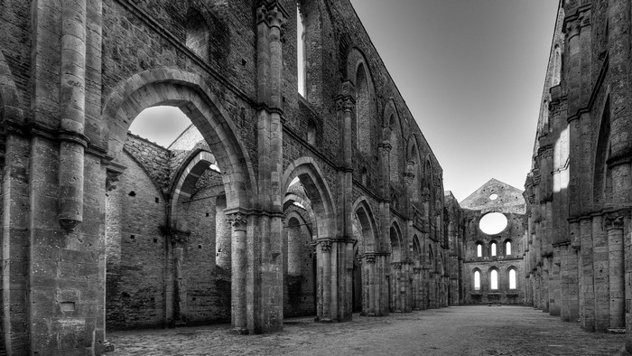
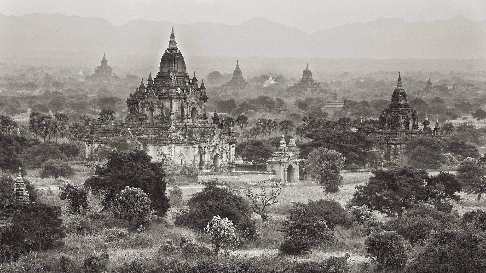

|  | The temple was oldest temples in Telangana this temple was built by Rajas of Wanaparthy Samsthanam 18th century on the bund of Ratna Pushkarini lake in Sri Rangapur |  | Srirangapur is about 10 km from Pebber and 25 km from Wanaparthy, 160 km from Hyderabad The nearest railway station is Gadwal station about 40 km for passenger trains |  |
This is an historic temple about 550 years old built in the era of Sri Krishna Devaraya |
| According to some legend, the great vijayanagar ruler Sri Krishnadevaraya visited the famous Ranganayakaswamy temple located at Srirangam and built a similar temple | Filled with hundreds of statues like the Meenakshi temple in Madurai, it is painted in a single colour with a grand gopuram in the front | Inside the temple, one sees a statue of the reclining Lord Vishnu with serpents and many more sculptures from various mythological stories on the walls |